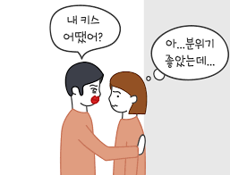
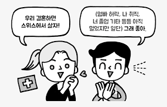

 
위의 두사진의 차이점은 무엇일가요?
첫번째 사진은 저 사진의 남자와 여자간의 소통 문제 입니다.
남자가 저런 상황에서의 알맞지 않은 소통으로 여자의 기분이 좋아보이지 않습니다.
하지만 두번째 사진은 어떤 상황인가요?
두번째 사진은 남자가 많은 생각들을 하고있지만 결국 마지막은 대답을 긍정적이고 상대방을 생각하여 둘다 기분이 좋을수 있는 상황을 만들었습니다.
이렇게 의사소통을 활발히 해준다는것은 + 가 될수 있다는 것입니다.